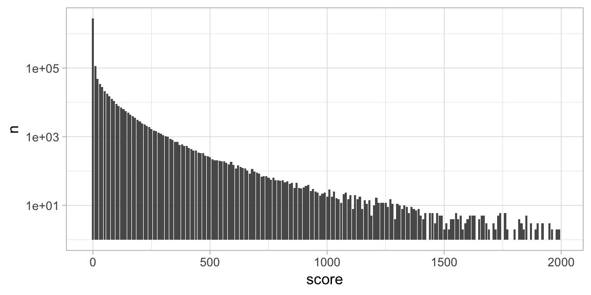

databases.RmdSome datasets are stored in remote databases which you usually access with DBI or dplyr, while they don’t present the risk of being deleted by mistake, there are also bennefits to using pins with databases.
For instance, you might want to access a public dataset stored in Big Query using bigrquery:
##
## Attaching package: 'dplyr'## The following objects are masked from 'package:stats':
##
## filter, lag## The following objects are masked from 'package:base':
##
## intersect, setdiff, setequal, unionlibrary(pins)
con <- DBI::dbConnect(bigrquery::bigquery(), project = bq_project, dataset = bq_dataset)Which we can analyze with DBI and then pin the results locally:
DBI::dbGetQuery(con, "
SELECT score, count(*) as n
FROM (SELECT 10 * floor(score/10) as score FROM `bigquery-public-data.hacker_news.full`)
GROUP BY score") %>%
pin("hacker-news-scores", "Hacker News scores grouped by tens.")## Auto-refreshing stale OAuth token.However, you can only use DBI when you can fetch all the data back into R, this is not feasible in many cases. Instead, when using dplyr, you can pin large datasets and transform them without having to fetch any data at all.
Lets pin the entire dataset using dplyr:
## # Source: SQL [?? x 14]
## # Database: BigQueryConnection
## by score time timestamp title type url text parent
## <chr> <int> <int> <dttm> <chr> <chr> <chr> <chr> <int>
## 1 user… NA 1.49e9 2017-03-19 17:22:04 "" comm… "" >… 1.39e7
## 2 ange… NA 1.46e9 2016-02-25 03:48:40 "" comm… "" I re… 1.12e7
## 3 md2be NA 1.52e9 2018-01-18 16:22:27 "" comm… "" Imag… 1.62e7
## 4 radl… NA 1.21e9 2008-07-01 21:30:11 "" comm… "" "<a … 2.33e5
## 5 pmon… NA 1.48e9 2016-12-02 15:56:20 "" comm… "" "No … 1.31e7
## 6 nabl… NA 1.55e9 2019-02-28 14:40:01 "" comm… "" You … 1.93e7
## 7 dmix NA 1.35e9 2012-08-18 00:01:42 "" comm… "" "I t… 4.40e6
## 8 Alre… NA 1.43e9 2015-04-29 12:25:07 "" comm… "" I ag… 9.46e6
## 9 danso NA 1.52e9 2018-04-19 14:16:30 "" comm… "" You … 1.69e7
## 10 meric NA 1.45e9 2015-11-19 01:46:16 "" comm… "" Is i… 1.06e7
## # … with more rows, and 5 more variables: deleted <lgl>, dead <lgl>,
## # descendants <int>, id <int>, ranking <int>This works well if you provide the connection, after your R session gets restarted, you would have to provide a connection yourself before retrieving the pin:
con <- DBI::dbConnect(bigrquery::bigquery(), project = bq_project, dataset = bq_dataset)
get_pin("hacker-news-full")This is acceptable but not ideal – it’s hard to remember what connection to use for each dataset. So instead, pin a connection:
con <- pin(~DBI::dbConnect(bigrquery::bigquery(), project = bq_project, dataset = bq_dataset), "bigquery")Then pin your dataset as you would usually would,
tbl(con, "bigquery-public-data.hacker_news.full") %>%
pin("hacker-news-full", "The Hacker News dataset in Google BigQuery.")From now on, after restarting your R session and retrieving the pin, the pin will initialize the connection before retrieving a dplyr reference to it with pin("hacker-news-full").
Which in turn, allows you to further process the datset using dplyr and pin additional remote datasets.
get_pin("hacker-news-full") %>%
transmute(score = 10 * floor(score/10)) %>%
group_by(score) %>%
summarize(n = n()) %>%
filter(score < 2000) %>%
pin("hacker-news-scores")You can then use this dplyr pin to process data further; for instance, by visualizing it with ease:
library(ggplot2)
get_pin("hacker-news-scores") %>%
ggplot() +
geom_bar(aes(x = score, y = n), stat="identity") +
scale_y_log10() + theme_light()
You can also cache this dataset locally by running collect() on the pin and then re-pinning it with pin().